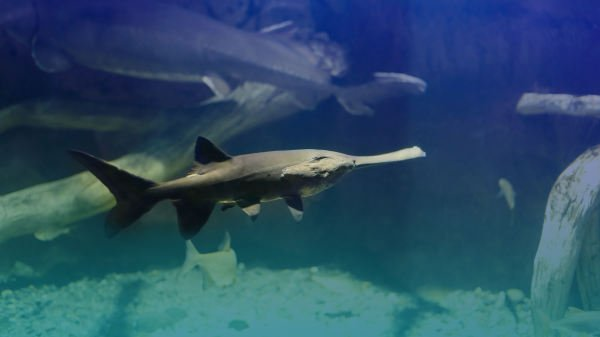

|  |
白鱘 白鱘（學名：Psephurus gladius），或稱作中華匙吻鱘，和生活在密西西比河的匙吻鱘同屬匙吻鱘科的魚類物種。另名為中國劍魚、劍吻白鱘，因為其吻部長狀如鴨嘴，也可俗稱為鴨嘴鱘，也有些白鱘的吻平直如劍，因此也可被稱為「象鼻鱘」。中國古代白鱘被稱之為鮪。當代因為其生存水域遭受破壞，其物種稀少，所以有「水中大熊貓」之稱。其個體腹部黑白色頭部灰色，白鱘以其他魚類和小型蝦蟹為食。其個體7－8年成熟，身長可達2米體重達到250公斤，最大可已長到3米體重達到300公斤，所以為世界上最大的淡水魚之一。 |
 |
尖吻鱘 尖吻鱘（學名：Acipenser oxyrhynchus oxyrhynchus），又名大西洋鱘（Atlantic sturgeon）是鱘科下的一個物種，也是世界上最古老的一種魚。它們的壽命可以達60歲，長達4.6米及重超過360公斤，是世界最大的淡水魚之一。尖吻鱘沒有鱗片，只有5行骨質的甲板。最大的標本可以重超過360公斤及接近4.6米長，一般則重130公斤及長1.8-2.4米。它們背部呈藍黑色及橄欖綠色，腹部白色。其吻較長，口邊各有4條鬚。 |
 |
伊氏石斑魚 伊氏石斑魚（學名：Epinephelus itajara）是一種大型的石斑魚，為輻鰭魚綱鱸形目鱸亞目鮨科的其中一種。伊氏石斑魚主要棲息在熱帶淺水區的珊瑚及人工礁間，水深達50米；幼魚棲息在汽水河口、河道及紅樹林沼澤。伊氏石斑魚吃甲殼類、其他魚類、章魚及幼海龜。而它們是其他大型魚類如梭子魚、鯙科及鯊魚所掠食的對象。 |
|
歐洲鰻鱺 歐洲鰻鱺（學名：Anguilla anguilla）為鰻鱺屬的一種降河迴游產卵魚類，可以長達140公分，但普遍為60至80公分，極少長於1公尺。歐洲鰻鱺在IUCN紅色名錄內列為極危物種。本魚體圓細長，下頷比上頷長；鱗片隱藏魚皮膚之下；鰓孔在圓形的胸鰭前；幼魚背部體色為橄欖色或灰褐色，腹部為銀色或銀黃色；成魚的背部黑灰綠色，腹部為銀色；延長的背鰭與臀鰭、尾鰭匯和鰭，形成一個獨特的鰭從肛門到背部中央最少有500個軟鰭條。背鰭起點在胸鰭後方遠處；臀鰭起源些微地在肛門後面體長可達140公分。(分布) 本魚原產於大西洋，包括地中海、波羅的海、北非摩洛哥、斯堪地那維亞半島等海域。 |
 |
路氏雙髻鯊 路氏雙髻鯊（學名：Sphyrna lewini），又稱作紅肉丫髻鮫，俗名犛頭沙、雙髻鯊、雙過仔。為軟骨魚綱真鯊目雙髻鯊科的其中一種。本魚體粗壯且延長，最大特徵是頭的額骨區向左右兩側突出，眼位於頭兩側突出部。體背部呈灰色，腹面稍淡。背鰭2個，胸鰭棘尾鰭上下葉尖端具黑斑；背鰭上部具黑緣，體長可達430公分。本魚棲息於沿岸至外洋中表層魚類，幼時常成群活動，成魚則獨游或小群巡遊。肉食性，以小型魚類為食。胎生，一次可產下15至31尾幼鯊，有攻擊人的紀錄。 |